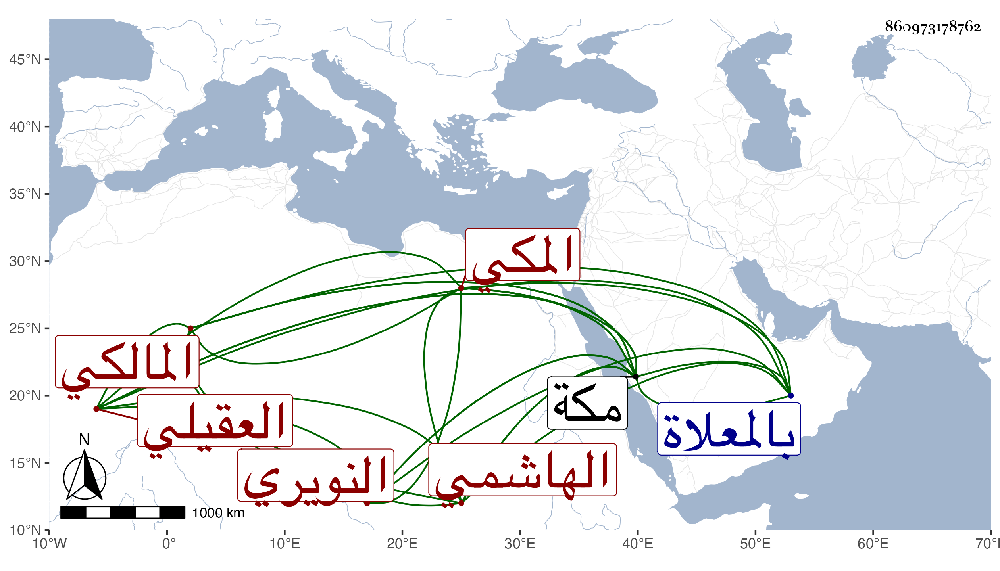

0902Sakhawi.DawLamic.ITO20230111-ara1.EIS1600.860973178762
Biography ID: 860973178762
24
أحمد بن علي بن أحمد بن عبد العزيز بن القسم الشهاب بن النور العقيلي الهاشمي النويري المكي المالكي . ولد في صفر سنة ثمانين وسبعمائة بمكة وحفظ القرآن والرسالة لابن أبي زيد وسمع من العفيف النشاوري وابن صديق وأجاز له ابن حاتم والمليجي وأبو الهول الجزري والعراقي والهيثمي وجماعة وحضر دروس الشريف عبد الرحمن بن أبي الخير الفاسي وولي إمامة مقام المالكية شريكا لأخيه وناب في القضاء ثم وليه استقلالا عوضا عن التقي الفاسي ولكنه لم يتمكن من المباشرة ولم يزل يحصل له من التجارة الدنيا الطائلة وهو ينفدها أولا فأولا . مات في ربيع الآخر سنة سبع وعشرين ودفن بالمعلاة ، وقد طول التقي الفاسي ترجمته في تاريخ مكة .
